3D studio and external flow¶
Two layers turn any geometry and its physics into pictures people understand: pp.viz, which renders, exports and
browses, and pp.cfd, which runs OpenFOAM around any body. They came out of the Aircraft Design Optimizer
(apps/aero_optimizer) and work the same way for a car, a building, a heat sink or a beam.
import pinneapple as pp
scene = pp.viz.Scene.from_file("result.frd") # any result pinneapple_data.cae reads, or an STL/OBJ
scene.save("result.glb") # glTF with the fields; .usda for Omniverse; .stl
pp.viz.render(scene, "stress.jpg", field="STRESS") # Blender Cycles, jet scale, colour bar
pp.viz.web_viewer(scene, "viewer/") # interactive page (python -m http.server -d viewer)
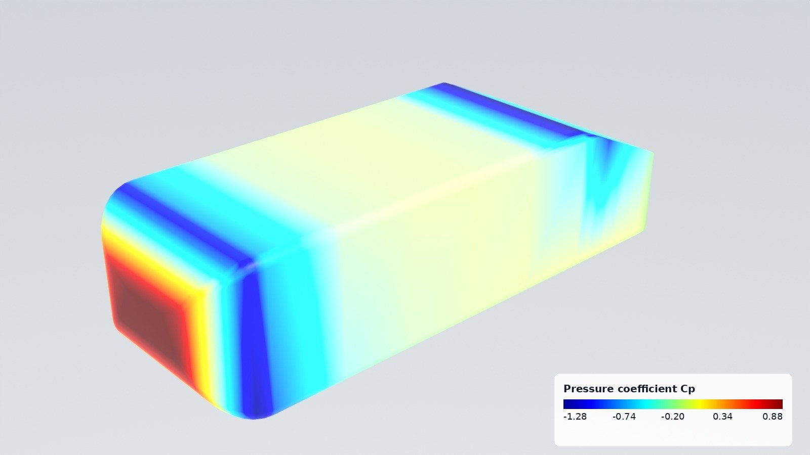
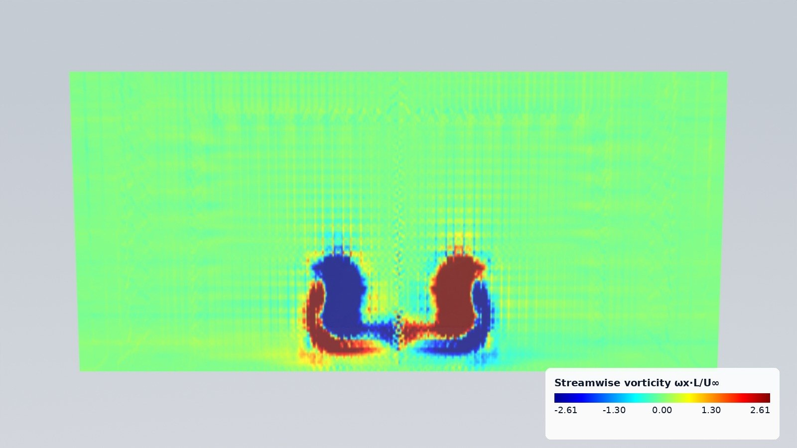
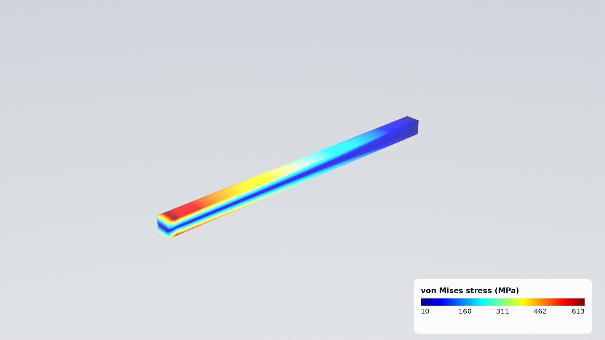
Scene¶
A Scene holds surfaces (vertices, triangles, a material and per-vertex fields), polylines with values
(streamlines) and slice planes (a value grid on a rectangle, NaN where there is no fluid).
| Build it from | Call |
|---|---|
| STL (binary/ASCII, one surface per solid), OBJ | Scene.from_file("part.stl") |
glTF/GLB (node transforms applied; float attributes _NAME become fields) |
Scene.from_file("model.glb"), axes="aircraft" for files written in aircraft axes |
VTK PolyData .vtp (needs pip install vtk) |
Scene.from_file("surface.vtp"): point and cell data |
OpenFOAM case or zip, CalculiX .frd, Abaqus .inp, Gmsh, VTK |
Scene.from_file(path): boundary surface with the cell or point fields; vectors become magnitudes, stress tensors von Mises |
A pinneapple_data.cae mesh you already have |
Scene.from_mesh(mesh) |
| Arrays | Scene.from_arrays(vertices, faces) |
Parts of pinneapple_design.aero |
Scene.from_parts(parts) (aircraft axes) |
Data known at other points (CFD wall faces, FEA nodes, sensors) goes onto the surface with
scene.map_field("cp", points, values, mirror_y=True), using inverse distance over the nearest points. mirror_y
handles half models. scene.labels["cp"] = "Pressure coefficient Cp" sets the colour-bar title.
Materials¶
A material is a flat entry — {"color": [r, g, b] in sRGB, "metallic", "roughness", and optionally
"clearcoat", "transmission", "alpha", "emissive"— in pp.viz.MATERIALS (the library) or in
scene.materials (the model's own table, which wins). A model whose names match neither renders grey, which is the
first thing to check when a part looks like a simulation instead of a photograph: scene.unknown_materials() lists
them, and render_animation names them in its log.
An entry may also carry "shader": "<name>", and Blender then builds the procedural detail the export formats
cannot carry — micro-bump, wear, streaks — on top of the same numbers. Everything else in the pipeline (glTF, USD,
the browser viewer) still gets the flat material the entry declares, so the shader never changes what a downstream
tool sees.
| Material | What it is | Shader |
|---|---|---|
painted_steel, paint |
industrial paint, chipped through to bare metal where it wears (wear, metal_color) |
painted_metal |
brushed_steel, stainless_steel |
brushed stainless: streaks along the object's x, roughness varying across the brush (streak) |
brushed_metal |
galvanized_steel |
the spangle of hot-dip zinc (a voronoi cell pattern, spangle) |
galvanized |
cast_iron |
pitted, sand-cast, no paint (grain) |
cast_metal |
oxidized_steel |
bare metal under rust in patches (rust, rust_color) |
oxidized_metal |
concrete |
aggregate in two shades of the entry's colour (aggregate) |
concrete |
rubber |
matte, pebbled (grain) |
rubber |
industrial_glass |
transmissive glass | — |
The procedural detail costs about 15-20% of the render, not a multiple: on the impeller (13 744 triangles,
1600x900, 96 samples, dark stage with a floor, the same bronze either way) 19-22 s with the flat material against
23-27 s with cast_metal on Metal, and 87-92 s against 101-104 s on the CPU.
pp.viz.SHADERS lists the recipes (each is a function of (bpy, material, entry), registered with
@pbr.shader("name")), so a project can add its own. The recipes came out of the industrial pump-station example,
examples/use_cases/physics_data_factory/blender_factory_render.py.
Baked maps¶
A shader is detail only Blender can read. pp.viz.bake_materials(scene, "maps/") (or
bake_materials_headless where bpy is not importable) bakes each material that names a shader into three images —
base colour, roughness and normal — and returns the entries ready to merge:
maps = pp.viz.bake_materials(sc, "maps/", size=1024, samples=16)
sc.materials.update({k: {**sc.materials.get(k, {}), **v} for k, v in maps.items()})
The signals come from Cycles' own passes, not from reading one node of the tree: a shader such as painted_metal is
two BSDFs mixed, and the base colour is the DIFFUSE albedo plus the GLOSSY tint (a metal's diffuse albedo is black),
so the paint and the bare metal it wears through to are both in the image. The entries keep their flat numbers as the
fallback and for anything that cannot read a map.
The maps live against per-corner UVs. bake_materials unwraps by default (uv="smart"): Blender's smart
projection, packed per material, stored back on Surface.uv — one pair per face corner, which is why the layout comes
back from a headless bake and the render here follows it. uv="box" keeps the projection of scene.box_uvs (each
triangle on the plane of its dominant normal axis, every face getting the whole square), which needs no unwrap pass and
is enough for a plate, a duct or a housing. Whichever is used, the same numbers reach the Blender render, the glTF
export (as TEXCOORD_0, with the vertices split at the seams because glTF indexes one UV per vertex) and the browser
viewer — the reader reads TEXCOORD_0 back, so a scene saved and reloaded carries its layout.
In glTF the images travel inside the GLB (images + textures), so the browser viewer needs no side-car files; in
USD the base colour map is a UsdUVTexture over primvars:st. Roughness and normal maps are Blender and glTF only
for now — glTF wants roughness packed with metalness in one texture, and USD wants a scale/bias for the normal.
Mechanical detail¶
A solver mesh is right to be smooth — every bolt head is a place where a boundary layer goes wrong. A figure is the opposite: at photographic distance the eye reads scale from exactly the seams, fasteners and welds that the mesh leaves out, and a casing with none of them looks like a render of a mesh, which is what it is.
pp.viz.detail generates them from the geometry you already have, so a detail level is a number in a script rather
than a second CAD model to keep in sync:
from pinneapple_tools.visualization.studio import detail as D
sc.surfaces += D.bolt_circle([0, 0, -0.04], (0, 0, -1), radius=0.042, count=6, head_radius=0.0055, height=0.0045)
sc.surfaces.append(D.seam_ring([0, 0, 0.025], (0, 0, 1), radius=0.211, thickness=0.0022))
sc.surfaces.append(D.weld_bead(saddle_curve, radius=0.006, material="raw_weld"))
| builder | what it puts where |
|---|---|
hex_bolt(centre, normal, head_radius, height, washer) |
one hex-head bolt standing on a surface, with a washer skirt that makes the head read at a distance |
bolt_circle(centre, normal, radius, count, ...) |
count bolts evenly spaced on a circle, the first on the plane's u axis, so two runs land in the same places |
weld_bead(points, radius) |
one continuous bead along a polyline: cylinders between the points with a sphere at each joint |
seam_ring(centre, normal, radius, thickness) |
the raised ring where two cast halves meet |
pad(centre, normal, radius, height, chamfer) |
a machined pad — a boss with a chamfered top edge, where a sensor or a name plate lands flat |
gusset(a, b, c, thickness) |
a stiffening rib: the triangle extruded along its own normal, across the corner of a frame |
pipe_flange(centre, axis, ...) |
the whole joint, as a list: plate, raised face, weld neck tapering into the pipe, and the bolts on the face |
They return ordinary Surface objects: they export to glTF/USD, they take any material, and they cost triangles, not
solver cells. The weld is worth calling out — give it the intersection curve (sqrt(R² - x²) around a branch) and the
bead follows the saddle instead of a circle, which is the difference between a weld and a drawn ring.
A detail level is a recipe, not a switch. pp.viz.detail.LEVELS names what each one puts on a body — draft is the
solver geometry as it is, review adds the cast seam, cinematic the fasteners, welds, pads, ribs and flanges — but
the script applies the builders with the measurements of the part, because where a rib goes is a question about the
part. The same spool body at the three levels is what the gallery shows side by side.
A body with a manufacturing history¶
Everything above adds something from the outside. A part that reads as real is the other way round: it carries the
record of how it was made. pp.viz.manufacture builds that record as operations, each leaving geometry and a line in
the history:
from pinneapple_tools.visualization.studio import manufacture as M
body = (M.cast_blank(radius=0.11, height=0.09, draft=2.0) # a drafted wall, an as-cast skin, a parting line
.machine_face([0, 0, 0.09], (0, 0, 1), radius=0.095) # bright, tool-marked, chamfered rim
.bore([0, 0, 0.0944], (0, 0, 1), diameter=0.036) # a throat and a chamfered mouth
.bolt_pattern([0, 0, 0.0944], (0, 0, 1), radius=0.08, count=6)
.weld(path) # a bead and the tinted band beside it
.finish()) # every remaining sharp edge broken
sc = body.scene
body.describe(" | ") # -> "fundido bruto Ø220 × 90 mm, saída 2.0° | face usinada Ø190 mm | ..."
Three things make it a history and not a pile of parts:
- the materials differ by operation. A cast skin (
as_cast) has sand grain and a dull, mottled roughness; a machined face (machined) is bright with tool marks in one direction; the band beside a weld (heat_tint) is straw and blue. The same light that dulls the casting runs down the cut, and that contrast is what a viewer reads as "manufactured". - the draft is geometry, not texture. A casting that comes out of a mould cannot have a vertical wall, and
cast_blanktapers it bydraftdegrees. - the history survives. Every operation appends to
body.historyand returns the same body, so the part can be rendered at any point of its process — blank, three operations in, finished — and the pictures compare the part, not three different models.body.describe()is the line a figure caption can carry.
bore cuts when it can and draws when it cannot, and the history says which: furado (cortado) or
furado (desenhado). A drawn bore is a dark throat under a chamfered mouth — what a hole looks like at photographic
distance, because a hole is a shadow with a bright lip — and it has no other side. A cut bore has an interior wall and a
silhouette that changes with the camera. See Solids and a real boolean below for what the cut needs.
Solids and a real boolean¶
pp.viz.solid is the kernel side: closed primitives, a manifold check, and a boolean.
from pinneapple_tools.visualization.studio import solid
solid.is_closed(shaft) # every edge shared by exactly two triangles, or it is not an operand
cut = solid.cutter_cylinder([0, 0, -0.02], [0, 0, 0.12], 0.018)
sc = solid.boolean(scene, [cut], op="difference") # difference, union or intersect
Blender's exact solver does the work, headless — the same route bevel_scene takes, so the requirement is the same
binary. There is no bundled mesh kernel in this package; trimesh with manifold3d does this too, and the shapes here
are ordinary Surface objects it can eat.
Two rules the module enforces instead of documenting and hoping:
- closed on both sides.
booleanrunsis_closedon the body and on every cutter first and refuses an open shell by name. A boolean on an open shell does not fail loudly; it produces a plausible mess, and a mess that looks like a result is the worst thing a gate can hand you. - no vertex on the axis. A drum capped with a fan whose centre sits on the axis meets a centred cutter at a
degenerate corner, and the cut comes out non-manifold.
solid_drumcaps from the ring instead, and there is a test that says why.
machine_face and pad produce closed solids too, so a bore cut into a machined face works; cast_blank(closed=True)
is a closed body by construction, which is why body.bore(...) cuts by default there.
Organic shapes: a loft through sections¶
solid.loft(stations) is the skin through a sequence of profiles — a duct transition from a round inlet to a
rectangular outlet, a volute, a casing. Every station is an (n, 3) array with the same n, and caps=True closes
the ends so the result is a solid a boolean can cut.
duct = solid.loft([solid.circle_profile([0, 0, 0], 0.05, n=24),
solid.rounded_rect_profile([0, 0, 0.20], 0.09, 0.06, n=24, roundness=0.55)])
The interpolation between stations is linear, on purpose: a station is a measurement, and a spline through measurements invents the shape in between. Put the stations where the geometry bends and the linear joint is invisible.
What this still is not: a B-rep modeller. There is no fillet on a lofted edge (use bevel_scene), no shelling, no
parametric sketch, and nothing that reads a STEP file. Those are CAD, and the day one is in the stack it plugs in at
solid.boolean and manufacture — the vocabulary of operations is already the right shape for it.
The edge that is not a builder¶
Everything above adds a surface beside the body. A chamfer is not that — it is the same body with material cut off its
edges, and it needs the mesh's topology. pp.viz.bevel_scene is the one studio operation that edits the body:
from pinneapple_tools.visualization.studio import bevel_scene
sc = bevel_scene(sc, angle=35, width=0.0015, segments=2) # a Scene you can render and export as usual
It welds the surfaces first (a mesh that came back from glTF has split vertices at every seam, and a bevel on those
would cut a groove instead of an edge), then applies the bevel modifier through Blender with an angle limit — only
edges sharper than angle are cut, so the facets of a curved wall stay a surface instead of turning into a bead. The
result is read back as a Scene, materials and all.
A machined edge is never perfectly sharp: at photographic distance the highlight along it is how a viewer tells a machined part from an extruded one, and it is the first thing that looks wrong in a figure of a casting.
Two limits: the bevel rebuilds the mesh, so per-vertex fields do not survive it (it refuses to run unless you pass
drop_fields=True — do it before mapping a result onto the body); and it needs Blender, in-process (bpy) or through
the binary.
Visual benchmark¶
python -m pinneapple_tools.visualization.studio.benchmark --out provas/ renders the reference cases — the impeller
in cast bronze on the machine-shop HDRI, the pin-fin heat sink in brushed aluminium under the studio light, the A320
with the material library in the warehouse — and writes, next to each PNG, a record of the time, the device and four
statistics of the picture: mean luminance, its spread, the fraction of the frame the subject covers and the edge
energy. --baseline provas/benchmark.json on a later run prints the deltas, and pp.viz.benchmark.compare does the
same from Python.
The numbers are the gate, not a pass/fail: they catch what a renderer regression looks like — black, blown out,
detail-less, subject gone — without the brittleness of a golden-image comparison across GPUs, drivers and Blender
versions. pp.viz.benchmark.CASES is the list; a case is a geometry from the library, its materials, the HDRI and the
camera preset.
The gate itself is --gate against a committed baseline, and it runs in CI on every pull request that touches the
studio (Visual benchmark): data/benchmark/baseline.json holds the four statistics of each case, recorded in the
canonical configuration (GATE: 960×540, 32 samples, preview) so today's record is comparable with last month's.
pp.viz.benchmark.gate compares a record with it and returns the differences beyond TOLERANCES (mean ±8,
std ±4, coverage ±0.06, edge_energy ±0.30 — absolute, in each statistic's own units; the edge energy allows
more because a metric grid is micro-detail by construction, and how a line a pixel or two wide is sampled and
denoised moves it by ±0.3 between two machines on the same Blender, which is still far from the zero a picture that
lost its detail reads); the command exits non-zero
when there are any. The time is recorded and reported but never gated: it belongs to the machine.
Recording a new baseline is deliberate, after a change that is meant to move the pictures, and it asks why:
python -m pinneapple_tools.visualization.studio.benchmark \
--out /tmp/benchmark --gate --record-baseline \
--why "shaders rewritten: cast_metal now has a finer grain" # rewrites data/benchmark/baseline.json
The reason is not a convention, it is required: --record-baseline without --why stops with an error, and the string
goes into the file's _meta together with the date, the Blender version, the gate configuration and the tolerances.
Every gate run then prints what it is comparing against — baseline: 2026-11-24T12:11:21Z, Blender 5.2.1 LTS --
primeiro baseline do gate ... — so a reader of a red run sees when the reference was drawn, with what, and why it
moved last time. The two outcomes of a red gate are a bug to fix or a move to accept on purpose; the second one leaves
a trace.
CPU and GPU agree: the same case rendered on either gives the same four numbers to the second decimal (the pixels differ by at most 3/255), so the baseline recorded on a laptop is the one CI compares against on a runner.
Renders¶
pp.viz.render(scene, out, field=..., lines=..., slice=..., view="iso", background="studio") needs
pip install "bpy>=4.2" (Blender as a Python module, Cycles; tested on 4.2 LTS and 5.2, older versions raise
an error, blender.MIN_BPY). The surfaces are built directly as Blender meshes with their MATERIALS /
scene.materials (no glTF import: Blender 4.2's importer crashes the interpreter at exit).
- Field colours: CFD colours use the jet scale, blue for low and red for high. The colour bar, with five ticks, is burnt into the image.
- Views:
iso,iso_back,iso_low,front,back,side,side_left,toporbottom. The names assume x is the object's length (the flow direction) and z is up. A direction vector also works. - Backgrounds:
background="studio"gives a light gradient with true colours;"sky"gives a physical sky with filmic tone mapping, for the realistic materials. - Device:
device="auto"(the default) renders on the first GPU backend this machine exposes — Metal on Apple silicon, OptiX or CUDA on NVIDIA, HIP on AMD, oneAPI on Intel — and falls back to the CPU when there is none, so the same script runs on a laptop and on a headless node.device="cpu","gpu"(whatever the Blender preferences select) or a backend name force the choice. Measured on an M5 against the CPU, on the centrifugal impeller of the geometry library (13 744 triangles, 1600x900, 96 samples, denoised, dark stage with a floor): 62.3 s on the CPU, 25.2 s on Metal; on the A320 airliner (34 560 triangles, 64 samples) 75.9 s against 23.5 s. The first Metal render on a machine takes minutes longer (the shaders are compiled once); the images are otherwise identical (largest channel difference 3/255, float rounding). - Quality presets:
quality="preview"(24 samples, 960x540 — 5.1 s on the same impeller and GPU),"production"(96 samples, 1600x900: the default, and the numbers the renderer always used) or"cinematic"(512 samples, 3840x2160, 16 bounces). An explicitsamples=orsize=wins over the preset. - HDRI environments:
background="hdri:hall"loadshall.hdr/.exr/.pngfrom$PINNEAPPLE_HDRI_DIR(default:data/hdri) — or a path, or a name registered inpp.viz.HDRIS— as an environment texture: the image is both the light and what the metals reflect.hdri_strengthscales it andhdri_rotationturns it in degrees around the up axis, which is how one HDRI gives several lighting directions. - Field as a layer, not a repaint:
field="T"replaces the surfaces with the colour map (the scientific reading).field_alpha=0.6instead mixes the map over each surface's own material, so a bronze or steel part keeps its colour, its roughness and its highlights under a translucent temperature layer: the figure reads as a photograph and as data at the same time. pp.viz.QUALITYandpp.viz.DEVICE_BACKENDSprint the two tables;pp.viz.hdri_path("hall")says which file a name resolves to.- Photography presets:
camera="product"(85 mm on the third line, f/8),"hero"(35 mm from slightly below, f/2.8),"documentary"(50 mm, everything in focus, centred),"head_on"(100 mm down the object's main axis) or"wide"(24 mm establishing shot). A preset fillslens,view,distance,fstopandcompositiononly where they are not given, socamera="product", lens=50gives the 50 mm lens from the product's position.composition="thirds_left" | "thirds_right" | "thirds_high" | "thirds_low"moves the subject off centre with a lens shift, which keeps the framing the auto-fit computed;fstopopens the aperture on the subject, which is what separates a part from its background at a close distance.pp.viz.CAMERASlists the presets. - Finishing:
look="low" … "high","very_high"or"punchy"is an S-curve on the display values (punchy adds a little saturation),post="bloom","vignette"or"bloom+vignette"is the light bleeding and the corners falling. Both act on the written PNG/JPEG, after the render, in :mod:.post— the scene compositor and the AgX looks changed between Blender 4 and 5, and a figure should not depend on which one is installed. An EXR is left alone: it is the input to a grade, not something to burn a contrast curve into. - Scale — making the picture measurable: a render normalises everything on the model's own bounding box, so on
its own a picture of a 25 mm pin and one of a 36 m airliner are indistinguishable and nothing in the frame can be
measured.
units=is metres per scene coordinate unit —"mm","cm","m","in","ft"or a number such as0.001;None(the default) usesscene.unit, which is1.0, a model already in metres. With it the renderer knows the subject's real size, and everything below is built from that (pp.viz.scaleis the module: the unit table, the round-value ladder, and the mesh builders, all pure numpy). backdrop="cyclorama"builds a seamless infinity cove all the way round the subject — floor, curve, wall — the shape a photographic studio has, sized from the subject so the same proportions serve a pin and an airliner.backdrop="floor"is a plain plane;floor=Truealone still means"floor", and a"dark"stage keeps its glossy black surface.floorused to be honoured only onbackground="dark"and was silently dropped everywhere else — including the HDRI cases the render benchmark ships — which is why the parts floated.grid=Truepaints a metric grid on that floor with squares about a tenth of the subject (snapped to 1, 2 or 5 times a power of ten), every fifth line wider; it is clipped by the floor's disc so no line runs up the cove.grid="25 mm"(or0.025) sets the spacing. The grid is geometry, not a post effect, so it exports in glTF and shows in the browser viewer too.scale_ref="auto"stands the largest prop of known size that does not dwarf the subject on the floor beside it and frames the two together: a 1.75 m mannequin, a 300 mm rule with millimetre graduations, a sheet of A4 or a 25.4 mm coin. Naming one ("human","ruler","a4","coin") forces it; a part smaller than every prop gets none, and only the grid and the bar can measure those.scale_bar=Trueburns a metric bar into the top-right corner, its length snapped to a round value and drawn at the image scale of the subject's plane —px_per_metre(size, camera_angle, distance), so the bar is metrically right where the camera focused, which is the convention a photograph with a scale bar uses.dimensions=Trueburns the subject's three extents, the grid square and the prop into the top-left corner.- The backdrop and the props scale with the subject; the grid, the surface textures and the text are sized in the
scene's metres. That split is what makes a small part look small. When the camera would end up below the set's
floor — which a low preset such as
camera="hero"does — it is raised to the floor and a warning says so, rather than rendering the underside of a plane. - Annotations are drawn after the render, in Pillow, on both paths: in-process, or by
render_headlessonce the Blender binary has exited (Blender's own Python has no Pillow). They need a raster output; an EXR is left alone. - Passes and alpha:
passes=Truewith an.exroutput writes the beauty as a 32-bit OpenEXR and, next to it in<out>_passes/, a multilayer file with the depth, normal, mist, diffuse, glossy, emission and transmission passes — what a grade or a compositor needs.film_transparent=Truedrops the world behind the geometry and keeps an alpha, for a figure that goes onto a page of another colour.
Without bpy — the usual case, Blender installed as an application — pp.viz.render_headless(scene, out, **kw)
takes the same keyword arguments and renders with the Blender binary: the scene goes to a temporary .glb (with its
scene.materials and labels carried alongside, so a material only the scene knows about still renders as written),
Blender runs it with --background, and the PNG is written to out. pp.viz.blender_executable() says which binary
it found: $BLENDER, then blender on PATH, then the macOS app bundle, /usr/bin, /snap or
C:\Program Files\Blender Foundation. A colour bar needs Pillow, which Blender's own Python does not ship, so draw it
afterwards (pp.viz.colorbar) or pass colorbar_on=False. Both paths accept exposure (EV) to take a dark stage
down or up.
Annotation geometry for a figure is built from three helpers, each returning a Surface you can put in a scene next
to the model: pp.viz.sphere_surface(centre, r, material="led") for a source, sensor or probe (an emissive material
reads on a dark stage), pp.viz.rod_surface(a, b, r) for a ray, beam axis or support, and
pp.viz.disc_surface(centre, r, normal=...) for an aperture or measurement plane (give the material an alpha in
scene.materials to see through it). The colour maps are pp.viz.CMAPS (jet, coolwarm, bwr,
rdbu, magma; pp.viz.stops(name) gives the table), the same ones the browser viewer draws from.
On a server or in a container there is no display to render against: pp.viz.headless() says what this machine is
missing and prints the commands that fix it, and Rendering without a
display is the recipe (xvfb, OSMesa, EGL and a ready image).
Browser viewer¶
pp.viz.web_viewer(scene, folder) writes index.html, viewer.js, studio-core.js, scene.glb, scene.json and
a copy of three.js, so no internet is needed. pp.viz.serve(scene) does the same in a temporary folder and serves it.
The page has these modes:
- Realistic: the materials;
- one mode per field: jet scale with a colour bar;
- Streamlines: coloured by their values;
- one mode per slice group: slices added with the same group form a stack.
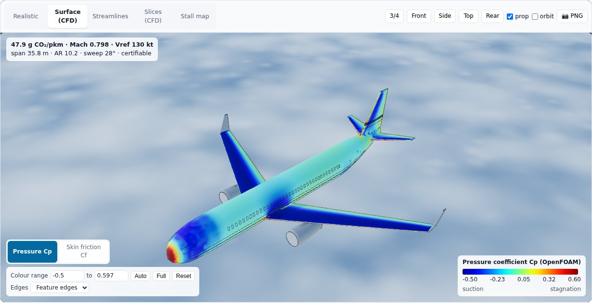
Controls under the modes:
- Colour range: type the ends, or press Auto (1st to 99th percentile, the default) or Full (minimum to
maximum). Each field, the lines and each slice group keep their own range.
- Slice position: a slider through the slices of a stack, for example the wake planes of ExternalFlow.
- Line density: shows an evenly spread share of the streamlines.
- Edges: off, feature edges (creases above 30°) or wireframe.
studio-core.js holds the colour scale, colour bar, tubes, slice textures and edges. The apps load it from
/studio/studio-core.js (the aircraft app's viewer is built on it), and its tick labels match the Python colour bar
of the renders. Its tests run with node --test tests/js/studio_core.test.mjs.
How big a mesh? Measured with a closed surface carrying two fields, in headless Chromium with software WebGL on 4 CPU cores. That is a worst case: a laptop GPU draws frames much faster, while loading and recolouring run on the CPU anyway.
| Triangles | scene.glb | Export | Page load | First frame | Field switch |
|---|---|---|---|---|---|
| 25 k | 0.7 MB | < 0.1 s | 2.4 s | 0.5 s | 0.1 s |
| 130 k | 3.6 MB | 0.1 s | 1.9 s | 0.8 s | 0.3 s |
| 260 k | 7.3 MB | 0.1 s | 2.5 s | 0.9 s | 0.5 s |
| 520 k | 14.5 MB | 0.2 s | 2.3 s | 1.4 s | 0.8 s |
| 1.04 M | 29.1 MB | 0.5 s | 2.8 s | 2.0 s | 1.7 s |
The file grows by about 28 bytes per triangle, plus about 2 bytes per triangle for each extra field.
- Up to about 500 k triangles: stays interactive.
- Above 1 M triangles (web_viewer(..., max_faces=1_000_000), the default): the page gets a decimated copy.
The scene itself is not changed, and max_faces=None keeps every triangle.
- For a smaller file: call scene.decimate(n) yourself. It uses vertex clustering and averages the fields, so
thin features below the cluster size can close up.
Slices are stored as JSON grids, about 7 bytes per value. Keep them to a few hundred cells a side.
One self-contained page. web_viewer(scene, folder, single_file=True, filename="view.html") writes a single
HTML file with scene.json, scene.glb, the viewer and the vendored three.js inlined (ES modules as data: URLs in
an import map). It opens from disk (file://) with no server and can be mailed; screenshot("folder/view.html",
...) takes its picture. Size: the glb in base64 plus about 1 MB of three.js.
Layers. When the surfaces carry two or more group names, scene.json lists them and the panel gets a Layers
row with one checkbox per group (window.studio.setLayer(name, on) from scripts).
Adding a viewer to a new example: pp.viz.export_gltf, viewer_html, blender_render¶
The three calls a new example needs, whatever the geometry came from (#281). They are the geometry-agnostic part of
the aircraft app's 3-D presentation; the aircraft specifics (its parts, materials, propeller group, axes) stay in
pinneapple_design.aero.airframe, which calls the same write_glb.
import pinneapple as pp
glb = pp.viz.export_gltf("wing.stl", {"cp": cp}) # bytes; the field is the vertex attribute _CP
page = pp.viz.viewer_html(grid, {"cp": cp}, "viewer/") # index.html + scene.glb, the page of the section above
pp.viz.blender_render("wing.stl", "wing.png", field="cp", samples=96) # Cycles, jet scale, colour bar
The input is a mesh in any of the shapes the repository already produces:
| You have | Pass |
|---|---|
an STL, OBJ, glTF/GLB, VTK/VTP file, or anything pinneapple_data.cae reads |
the path |
a PyVista grid (what pp.viz.read_openfoam returns, #60) or a PolyData |
the object |
| vertices and triangles in arrays | (vertices, faces) |
a pinneapple_data.cae mesh |
the mesh object |
| a scene already built with materials and lines | the Scene |
fields is {name: values}: one value per vertex, or per cell (the lengths decide; a volume grid's cell values are
interpolated to the nodes of its boundary), vectors as their magnitude, tensors as von Mises. A multi-surface scene
takes {name: {surface_name: values}}, which is how the airliner passes one skin-pressure field per part.
Things worth knowing before wiring it into an example:
- The colour range is not in the glb.
viewer_htmlwrites the ranges inscene.jsonand the page computes them (1st-99th percentile by default, Full on demand); a range baked into the geometry cannot be changed without exporting again.blender_render(field_range=(lo, hi))pins the render's scale. - A cell value is averaged onto the vertices of the triangles it touches. A vertex colour cannot carry two values at the same vertex; averaging is the honest way to say so, and the field's range is unchanged by it.
- The page has a size guide (the table above):
viewer_html(..., max_faces=...)decimates a copy for the page and says so; above about 1 M triangles decimate the scene yourself withscene.decimate(n). - A render says why it cannot happen. Without
bpyand without a Blender binary,blender_renderraises with the install line; it never returns a path to a picture that was not rendered. - The app viewers share the page module. If the example is an app, serve the same
studio-core.js(colour scale, colour bar, tubes, slice textures, edges) andfieldview3d.js(apps/_shared/static/shared/) instead of writing a second viewer: the aircraft app'sstatic/viewer3d.jsimports/studio/studio-core.jsand keeps only its aircraft modes, and its/api/aircraft.glbroute now callspp.viz.export_gltfwith the propeller group.
Fields, errors and deformed shapes in the apps: pp.viz.field_view¶
The apps show a result on its mesh with one shared page module, apps/_shared/static/shared/fieldview3d.js, served at
/shared/fieldview3d.js and built on the same vendored three.js and studio-core.js. The library builds what it
shows:
import pinneapple as pp
from pinneapple_analysis.validation.error_map import error_map, grow_region
em = error_map(mesh.points, pred, ref, regions={"clamp zone": grow_region(mesh.points, clamp, 0.2)})
fv = pp.viz.field_view(mesh, [
{"name": "ref", "values": ref, "label": "FEM von Mises", "unit": "MPa", "group": "vm", "deform": "FEM"},
{"name": "pred", "values": pred, "label": "ROM von Mises", "unit": "MPa", "group": "vm", "deform": "FEM"},
{"name": "err", "values": em.error, "label": "|ROM − FEM|", "unit": "MPa", "kind": "error"}],
deform={"FEM": u}, length_unit="m",
markers=[{"name": "clamp", "kind": "bc", "points": mesh.points[clamp]}])
fv.glb(), fv.meta # the glTF (fields as vertex attributes) and its description
em.summary() # where the error concentrates, against the global number
- Colours. Values use the jet scale from their minimum to their maximum on the surface; fields of one
groupshare a scale. Errors use the sequential error scale (ERRinstudio-core.js, white = 0) from 0 to their 99th percentile, and the colour bar says when the maximum lies above it. - The caption. Every field must declare a
unit: a rendered field without one is a picture of colours, sofield_viewrefuses it, and"unit": "-"is how a dimensionless field says so.fv.meta["captions"]holds, per field, the caption the page prints — the label, the unit, the range, the exaggeration the view will use and the length unit — andfv.meta["caption"]is the one for the field on screen. The same sentence is built anywhere else a figure is written:pp.viz.figure_caption("von Mises", "MPa", value_range=(0, 512.4), deform=25.0, method="FEM", status="validated")gives von Mises [MPa], 0 to 512.4 MPa, deformation x25, lengths in m, FEM (validated), andpp.viz.turntableputs it on the clip instead of composing its own. - Deformed shape. Each
deformentry gives a nodal displacement. The page draws it with a scale factor. By default the largest displacement is drawn as 10 % of the body, and1×shows the true scale. The undeformed shape stays as a grey wire. - Markers. Boundary conditions, loads, error hotspots and other regions get coloured points and a label. A marker can belong to some fields only.
- Size. Above
max_facestriangles (VIEW_MAX_FACES= 250 k by default) the surface is decimated, and the page says so. 250 k triangles is about 7 MB and a 0.5 s field switch in the table above.
Lighting presets, Sun shadows and planetary surfaces¶
studio.lighting holds lighting and sky presets that PyVista, Blender and the browser viewer share:
| Preset | Sky | Sun | Used for |
|---|---|---|---|
studio |
grey-blue gradient | soft, 45° | the CFD renders (aircraft, Formula car) |
lunar_south_pole |
black | 5°, 0.53° disc | the lunar south pole: within about 5.5° of the horizon at 86° S |
lunar_low_sun |
black | 12° | long hard shadows, with small crater floors partly lit |
lunar_day |
black | 30° | mid latitudes |
How each renderer uses them:
- PyVista: apply_pyvista(plotter, "lunar_south_pole", earth=True) adds the Sun, a weak regolith bounce
light and, optionally, Earth at its 1.9° apparent size.
- Blender: pp.viz.render(scene, "x.jpg", background="lunar_south_pole") lights the scene with one Sun lamp of
the Sun's angular size and no sky light.
- Browser viewer: scene.set_lighting("lunar_low_sun") makes the viewer draw the black sky and the low Sun.
studio.shadows bakes hard Sun shadows into heightfield terrains, independent of the renderer:
- Self-shadowing: terrain_self_shadow marches towards the horizon along the Sun direction.
- Cast shadows: cast_shadow projects vehicle and rock meshes along the Sun onto the terrain.
- Shadowed points: points_in_terrain_shadow darkens meshes the terrain hides from the Sun.
Regolith is shaded with the Lunar-Lambert photometric function of McEwen (1991), which keeps it readable at grazing
Sun angles where a Lambert surface turns black. studio.planetary.render_surface(SurfaceView(...)) puts it all
together: terrain with baked photometry and shadows, a far-field ring, rocks, vehicle parts with their materials,
optional field colour maps on the terrain and the parts with a colour bar, and Earth.
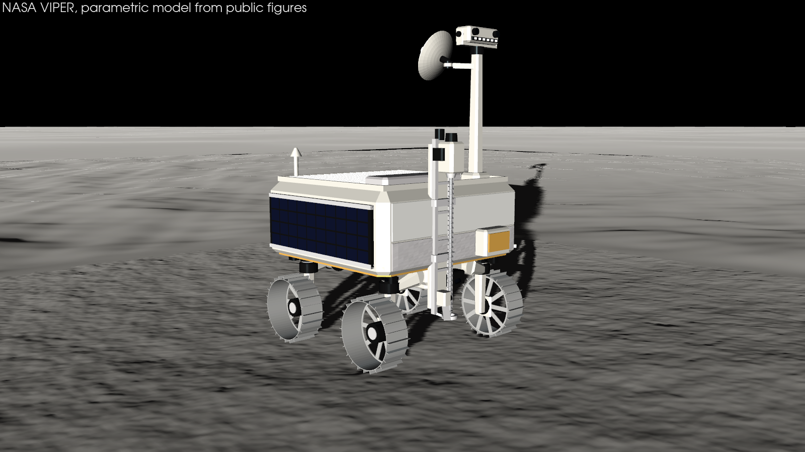
The lunar rover page (Lunar rover terramechanics in 3D) shows these in use.
Animations: bodies moving through a scene¶
pinneapple_tools.visualization.studio.animation.Animation adds time to a Scene: rigid tracks (an aircraft on a
runway, a vehicle, a rotor), arrows per frame, a trail drawn up to the current time, per-vertex fields that change
with time (e.g. a wing-load lattice) and head-up numbers. Surfaces whose group matches a track are given in the
body frame and placed at frame k by R(q_k) v + positions[k]; quaternions are [w, x, y, z], everything in the
scene's axes.
from pinneapple_tools.visualization.studio import Scene, Surface
from pinneapple_tools.visualization.studio.animation import Animation
from pinneapple_tools.visualization.studio.blender import render_animation
from pinneapple_tools.visualization.studio.web import screenshot, web_viewer
sc = Scene([Surface("runway", Vr, Fr, "concrete"), Surface("aircraft", Va, Fa, "paint", group="ac")])
anim = Animation(t, camera="follow") # times (T,)
anim.add_track("ac", positions, quaternions) # (T, 3), (T, 4)
anim.add_vectors("loads", origins, vectors, values=mag, attach="ac", label="Load [kN]") # (T, M, 3), (T, M)
anim.add_trail("path", positions)
anim.add_hud("V", speed, "Speed", "m/s")
sc.animation = anim.resample(200) # keeps scene.json small
web_viewer(sc, "viewer/") # play, time slider, speed, Follow, Vectors
screenshot("viewer/", "f100.png", frame=100) # headless Chromium (playwright)
render_animation(sc, "frames/", camera="chase", samples=16, gif=True) # Cycles PNGs + HUD, MP4 and GIF
- Viewer: a bottom bar with play / pause, a time slider, the playback speed (0.25x to 4x), the time, a Follow
checkbox (chase camera; orbiting still works) and a Vectors toggle; the HUD values sit top left and the colour
bars of arrows and animated fields top right. Between frames positions are linear and rotations slerp. The camera
fit covers the static scene and the trajectories, and the clip planes follow the distance, so a 3 km runway with a
37 m aircraft works.
window.studio.setFrame(k)andwindow.studio.play(true)drive it from scripts. - Blender:
render_animationimports the surfaces once, parents each tracked group to an Empty, draws the arrows as cylinders and cones and the trails as growing tubes, burns the HUD into each PNG and encodes an H.264 MP4 (yuv420p) and optionally a GIF with ffmpeg. Cameras:"chase","follow","side","tower","fixed". Animation.at(t),pose(group, k),frame(k),transform(group, k, points)give the transforms;to_dict/from_dictround-trip the JSON.- Shapes and other axes.
add_surface_shape(surface, vertices)gives a surface's vertex positions per frame(T, n, 3)(a radiation balloon that changes with frequency, a deforming body), in the viewer and in Blender. The animated axis need not be time:Animation(f, time_label="f", time_unit="GHz", interpolate=False)labels the slider and the HUDf = 2.50 GHzand steps between frames (no blend between solved frequencies, also inresample);Animation(wt, time_label="ωt", time_unit="°", time_decimals=0)animates a phase. - Colours: arrows, trails (
add_trail(..., values=nz, label="n_z [g]", radius=..., alpha=...)), animated surface fields and staticLines(cmap,alpha,radius,color_range) takecmap="jet"or the diverging"coolwarm"/"bwr"(neutral midpoint, range symmetric about zero by default); the viewer and the Blender colour bars use the same stops (compose.CMAPS,studio-core.jsCMAPS). - Cinematic clips:
render_animation(sc, "frames/", camera="chase_low", motion_blur=True, dof=5.6, haze=1.0, sparkline="nz", hud_keys=["V", "nz"], trails={"alpha": 0.7}, colorbars={"lines": False}, crf=27)andrender_still(sc, "still.png", frame, size=(1920, 1080), samples=64, ...)(same options, one frame). Motion blur uses a shutter in scene seconds (default 1/30 s) and keyframes the bodies and the camera, so the ground blurs and the tracked body stays sharp;dofis the f-stop, focused on the tracked body;hazeis a noise-modulated volume (optical depth over ten camera distances) that thins out near the tracked body. Imported meshes are smooth-shaded with sharp edges above 35 degrees; materials namedasphaltandgrassbecome procedural (colour patches, roughness variation, bump) andmarkingsurfaces are lifted so the paint stays crisp. Trails show the lasttrail_seconds(default 8 s) of the path, 0.003 x the body size thick, fading to transparent at the tail and never running through the camera. Materials missing fromMATERIALSandscene.materialsrender grey and are named in the log: put a model's own material table inscene.materials. - Panels:
compose.compose_grid(pngs, "grid.png", labels=..., ncols=2, colorbar=(title, lo, hi, cmap))andcompose.compose_grid_video(mp4s, "grid.mp4", labels=..., colorbar=..., crf=28, webm=True)(ffmpegxstack, H.264 yuv420p, optional VP9) put several clips side by side with one common colour bar.
Turntable: a field orbiting while the time advances¶
pp.viz.turntable turns a stack of 2-D fields into a clip in one call: the camera sweeps a full turn while the field
runs from the first instant to the last, so both the geometry and the time are motion. It draws with matplotlib's
Agg canvas, so it needs no display, no GPU and no pyvista; the GIF path needs only Pillow, and MP4 needs the ffmpeg
binary on PATH.
import numpy as np, pinneapple as pp
t = np.linspace(0.0, 2.0, 24) # 24 instants
x = y = np.linspace(0.0, 1.0, 64)
X, Y = np.meshgrid(x, y, indexing="ij")
field = np.sin(2 * np.pi * (X[None] - t[:, None, None])) * np.cos(2 * np.pi * Y[None])
pp.viz.turntable(field, "case.gif", t=t, name="u", unit="m/s") # 1080p GIF, ~3 s
pp.viz.turntable(field, "case.mp4", t=t, name="u", unit="m/s", frames=72) # H.264, smoother orbit
- The frame says what it shows: a caption with the field, its unit and the instant (
u [m/s] t = 1.2 s), a colour bar, and a discreet mark in the corner (mark="PINNeAPPle",mark_alpha=0.45) so a clip lifted out of a report is still attributable.caption=False,colorbar=Falseandmark=""remove them for a clip annotated elsewhere. - 1080p is the default, not an option to remember:
size=(1920, 1080).dpionly changes how the figure is built, never the pixels. framesspreads the clip over that many frames, repeating the nearest instant when it asks for more than there are, which is how a handful of solved instants becomes a smooth orbit. The sweep stops one step short of closing the turn, so a looping GIF does not stutter on a repeated first frame;orbit=sets the sweep (0freezes the camera) andazimuth=where it starts.- The field drives the relief and the colour:
deform=0.25lifts the surface by a quarter of the domain width (0leaves it flat),climholds the colour scale fixed for the whole clip, andelevationandzoomframe it. - No file, no encoding:
turntable(field)returns the frames as(h, w, 3)uint8arrays, which is what a caller that wants to compose them somewhere else needs.
Provider pinneapple_tools.visualization.orbit.turntable for the details; the failure modes (a 2-D field, a single
instant, a NaN, an unknown suffix) are refused with a message that says what to pass instead.
Particle process videos¶
Thousands of spheres coloured by a value inside glass or steel equipment that moves (an impeller turning), rendered with Cycles point clouds, then composed with charts that draw themselves as time runs, a colour bar and a clock. Any Lagrangian result works: DEM, stirred tanks, fluidised beds, hoppers, sprays.
from pinneapple_simulation.numerical_solvers.particles import StirredTank, suspend
from pinneapple_tools.visualization.studio.particles import compose_video, render_particle_frames
tank = StirredTank(R=0.075, H=0.15) # pitched-blade turbine, glass tank
res = suspend(tank, n=12000, d=3e-3, rho_p=1200.0, rpm=lambda t: min(400.0, 16.0 * t), t_end=30.0)
angle = ... # impeller angle per frame
pngs = render_particle_frames(res["frames"], 3e-3, "frames/", field_range=(0, 0.4),
equipment=lambda k: tank.surfaces(angle[k]))
compose_video(pngs, res["times"], "tank.gif", mp4=True, frame_dir="composed/",
charts=[("Particles Top [%]", res["times"], 100 * res["top_fraction"]),
("Stirrer Speed [RPM]", res["times"], res["rpm"])],
colorbar=("Velocity Magnitude (m/s)", 0, 0.4))
frames is a list of dicts with x (n, 3) and a value per particle (speed or value). equipment(k) returns
the surfaces of frame k as (name, vertices, faces, material) with material "glass", "liquid", "steel" or "grey".
Surfaces keep their topology between frames, so only the vertices move. The MP4 goes through Blender's own encoder,
so no ffmpeg binary is needed. The lab experiment particle_suspension runs the whole chain with checks: settling
velocity against Schiller-Naumann, a divergence-free flow, particles kept in the tank, and the just-suspended speed
against Zwietering.
Structural FEA with CalculiX: pp.fea¶
The same few lines for any part: a mesh, sets picked by geometry, one step, results as arrays, the post-processor figure or a Blender render.
import pinneapple as pp
m = pp.fea.FEModel.from_gmsh(pp.fea.geo_l_bracket(), size=0.0025) # gmsh C3D10; or FEModel.from_box(...)
m.material = pp.fea.Material("steel", E=210e9, nu=0.3, density=7850.0)
base = m.nodes_where(lambda X: X[:, 2] < 1e-9)
top = m.nodes_where(lambda X: X[:, 2] > 0.08 - 1e-9)
res = pp.fea.solve(m, pp.fea.Static(fix=[(base, (1, 2, 3))], loads=[(top, (2000.0, 0, 0))]), "work/bracket")
res.u, res.stress, res.von_mises, res.reactions
modes = pp.fea.solve(m, pp.fea.Frequency(6, fix=[(base, (1, 2, 3))]), "work/modes") # .frequencies, .modes
from pinneapple_simulation.numerical_solvers.solid_fem import fea_figure
fig, _ = fea_figure(res) # deformed mesh, S Mises bands, legend
Steps: Static (point loads, face pressure, gravity, nonlinear geometry, plasticity through Material.plastic),
Frequency, Buckle, Heat (fixed temperatures, film convection, surface flux). Faces come from
m.faces_where(pred) on face centroids. ccx runs natively or in the bundled Docker image, and gmsh meshes
any .geo script, OpenCASCADE booleans included. The lab experiment calculix_case checks five studies against
closed-form references: a plate with a hole (Heywood), an L bracket (M c / I, mesh convergence), modes
(Euler-Bernoulli), buckling (Euler) and a fin (1-D fin).
External flow: pp.cfd.ExternalFlow¶
flow = pp.cfd.ExternalFlow({"ahmed": pp.bodies.ahmed_body(25)}, speed=40.0, ground=0.0, half_model=True,
resolution="medium")
res = flow.solve("cases/ahmed", procs=4) # write, snappyHexMesh, simpleFoam, read
res.coefficients # CD, CL, CS, pressure/friction split, per body, newtons
scene = res.to_scene() # skin Cp and Cf, streamlines by |U|/U∞, mid-plane and wake slices
Setup
- Steady incompressible RANS: simpleFoam, k-ω SST, wall functions.
- Bodies: a dict of (vertices, faces), an STL path or a Scene.
- The domain and background cells scale with the bodies' length. resolution sets the surface refinement levels:
coarse, medium or fine.
- alpha and beta tilt the flow.
- half_model adds a symmetry plane at y = 0.
- wake_planes (default (0.25, 0.5, 1.0, 1.5) body lengths behind the bodies): the cross-flow slices, one stack
per field in the viewer.
- ground adds a road (True: at the lowest point of the bodies; a number: its height), moving with the flow unless
ground_moving=False.
Results
- Forces: pressure plus wall-function shear from the log law at the first cell.
- Coefficients use ref_area; the default is the frontal area of the bounding box.
- A FlowResult can be saved with res.save("result.npz").
Validation, Ahmed body, 25° slant, 40 m/s, half model, moving road
| Mesh | Cells | CD | Time (2 cores) |
|---|---|---|---|
| coarse | 0.15 M | 0.321 | 4 min |
| medium | 0.20 M | 0.298 | 10 min |
| wind tunnel (Ahmed et al. 1984) | ≈ 0.285 |
Needs OpenFOAM (v1912 and later tested). Set FOAM_BASHRC if its bashrc is not at
/usr/share/openfoam/etc/bashrc. pp.cfd.openfoam_available() checks it. The aircraft case
(pinneapple_design.aero.case3d) is built on the same pieces: write_flow_fields, snappy_dict, run_case and
CaseFields, which provides wall forces, streamline tracing and plane sampling for any case.
Example: Formula car at 70 m/s¶
pinneapple_design.geometry.vehicles3d.FormulaCar is a parametric open-wheel car. It has:
- a tub and engine cover lofted from superellipse rings;
- a flat floor with a diffuser ramp;
- three-element front and rear wings built from NACA 4-digit sections, with a rear flap that opens for DRS;
- endplates, a helmet, a halo and four wheels.
cfd_bodies() groups the closed surfaces into body, floor, front wing, rear wing, helmet and wheels, so the forces
come out per component. frontal_area() rasterises the front view, giving 1.68 m² for the default car.
examples/studio/06_formula_car_cfd.py [coarse|medium|fine] [procs] [drs] runs the half model through
pp.cfd.ExternalFlow with a moving road at 70 m/s. It writes:
- the coefficients;
- the glTF scene and the browser viewer;
- PyVista stills;
- a Plotly page;
- a Rerun recording.
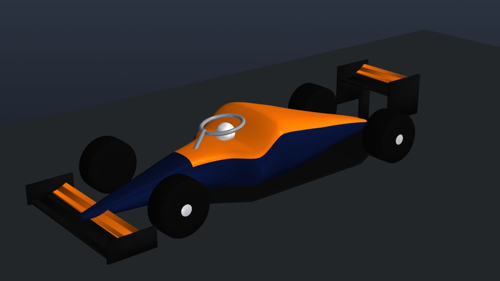
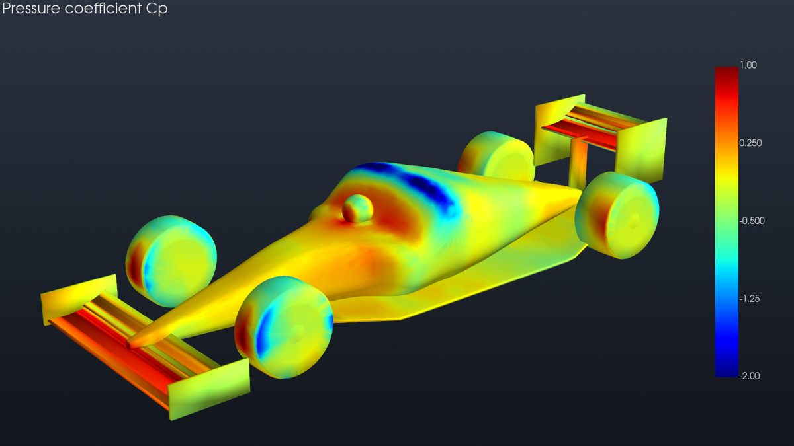
The pressure side of both wings is red. Suction peaks sit over the airbox, on the shoulders of the tyres and under the wing flaps.
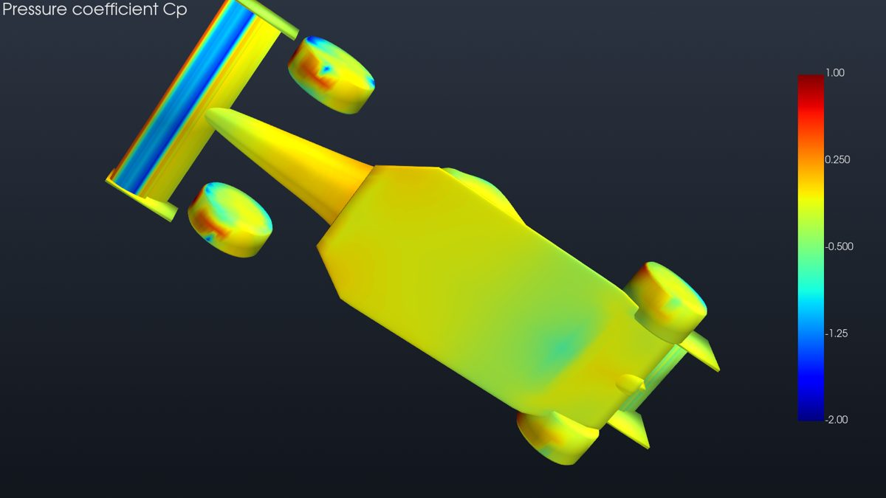
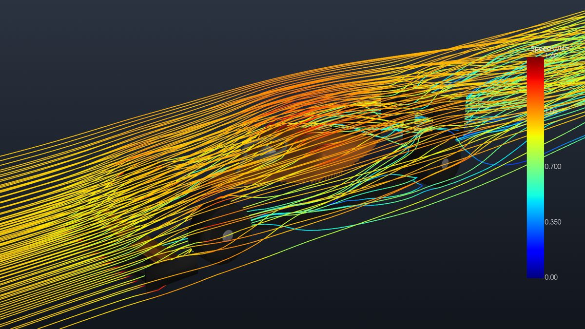
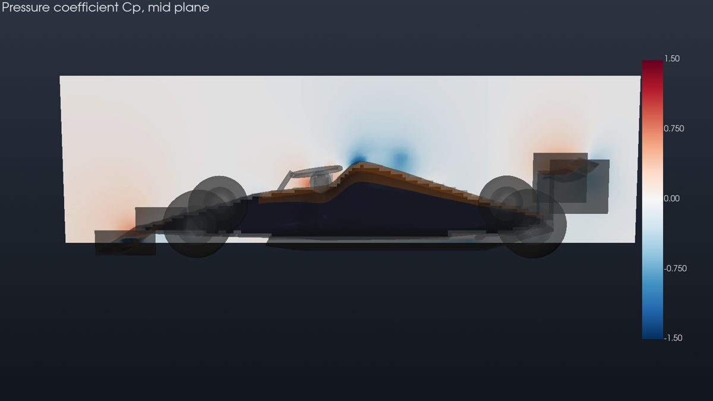
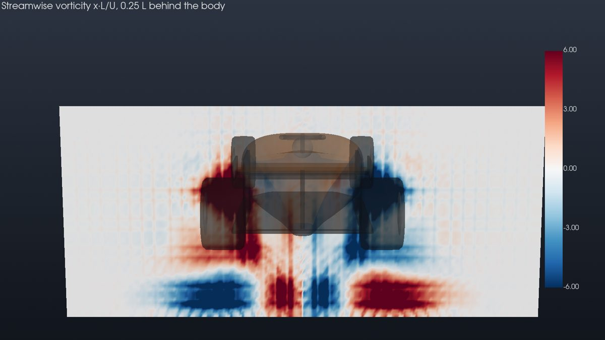
The wake plane 0.25 L behind the car shows two vortex pairs: one from the rear-wing tips and upper tyres, one low, from the rear tyres, the floor edges and the diffuser.
Medium mesh (0.21 M cells), 800 iterations, 4 cores, about 20 minutes per case:
| Case | CD | CL | L/D | Drag at 70 m/s | Downforce at 70 m/s |
|---|---|---|---|---|---|
| DRS closed | 0.596 | -0.865 | 1.45 | 3.01 kN | 4.36 kN |
| DRS open | 0.580 | -0.826 | 1.42 | 2.87 kN | 4.09 kN |
The coefficients use each case's frontal area (1.68 m² closed, 1.65 m² open), so compare the forces in newtons. Opening the flap cuts the rear-wing drag from 489 N to 214 N (−56 %) and its downforce from 1.80 to 1.41 kN (−21 %). The car's total drag falls by only 4.5 %, because the wheel drag rises by 144 N in the changed flow behind the wing.
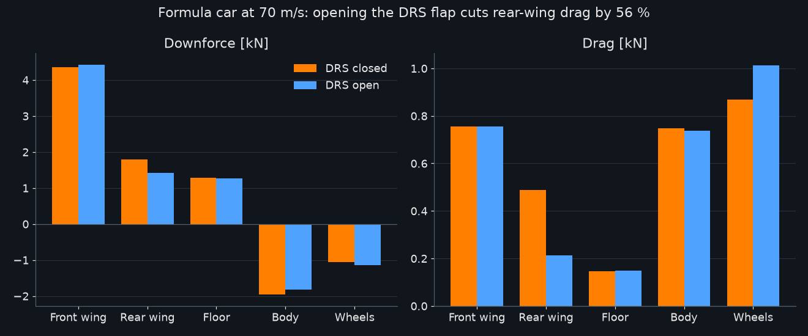
Per component, DRS closed (share of the net downforce):
| Component | Downforce | Drag |
|---|---|---|
| front wing | 4.35 kN (100 %) | 0.76 kN |
| rear wing | 1.80 kN (41 %) | 0.49 kN |
| floor | 1.28 kN (29 %) | 0.15 kN |
| body | -1.96 kN (-45 %) | 0.75 kN |
| wheels | -1.06 kN (-24 %) | 0.87 kN |
| helmet | -0.04 kN (-1 %) | 0.00 kN |
The car is a simplified shape on a coarse mesh, so it shows the workflow; it is not a validated F1 aero model:
- The floor has no Venturi tunnels or edge vortex generators, so it gives under a third of the downforce, much less than on a modern car.
- The front wing carries almost all of the net downforce, while the tub and the wheels lift.
- Wall functions on 0.2 M cells resolve neither the wing boundary layers nor the tyre wakes.
Treat the numbers as a demonstration of the pipeline, not as a design result.
Bodies¶
pp.bodies.ahmed_body(slant_deg), sphere, cylinder and box return closed, outward-facing triangle meshes in
metres, with x along the flow and z up.
Examples¶
examples/studio/01_any_result_in_3d.py: a CalculiX result as glTF, USD, viewer and render.examples/studio/02_ahmed_body_cfd.py: from geometry to pictures, through OpenFOAM.examples/studio/03_airliner_with_cfd.py: the aero app's airliner with its OpenFOAM skin pressure.examples/studio/06_formula_car_cfd.py: the Formula car above, with DRS closed or open.